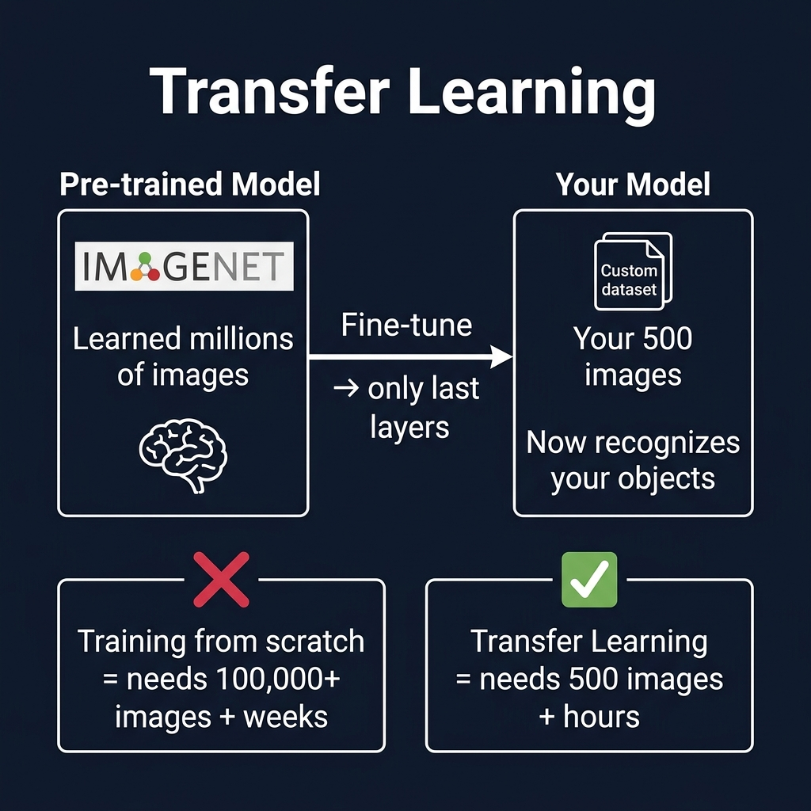

التدريب وإعداداته Training & Hyperparameters
كيف يتعلم النموذج Model من البيانات؟ وما هي الإعدادات Hyperparameters التي تتحكم في جودة التعلم وسرعته؟
١. كيف يتعلم النموذج؟ How Does Training Work?
التدريب Training عملية تكرارية Iterative Process: النموذج يرى البيانات ← يتوقع ← يقارن توقعه بالإجابة الصحيحة ← يعدّل نفسه ← يكرر. مع كل تكرار يتحسن قليلاً.
Input → 🤔 يتوقع
Prediction → 📊 يحسب الخطأ
Loss → 🔧 يعدّل الأوزان
Backpropagation → 🔄 يكرر
Repeat
مثال: تخيل طالب يتعلم رسم الخرائط: يرسم خريطة ← المعلم يقارنها بالخريطة الأصلية ← يوضح له أين أخطأ ← الطالب يعدّل ← يرسم مرة أخرى. بعد 50 محاولة، رسمه يصبح دقيقاً جداً!
٢. عدد الدورات Epochs
الـ Epoch يعني دورة كاملة Full Pass على جميع بيانات التدريب. إذا عندك 5,000 صورة و Epochs = 100، النموذج سيرى كل صورة 100 مرة.
مثل طالب يقرأ كتاباً: المرة الأولى يفهم 20%، المرة الخامسة 60%، المرة العشرين 90%. لكن بعد المرة الـ200 لن يتحسن كثيراً — بل قد يحفظ الكلمات بدون فهم!
كثرة الـ Epochs ليست أفضل دائماً! إذا زدتها كثيراً يحدث Overfitting (الإفراط في التعلم) — النموذج "يحفظ" بدل ما يفهم. القيم الشائعة: 50-300 حسب حجم البيانات.
٣. حجم الدفعة Batch Size
كم عينة Sample يراها النموذج دفعة واحدة In One Step قبل أن يعدّل أوزانه Weights.
مثال: معلم يصحح أوراق الامتحان. Batch Size = 1: يصحح ورقة واحدة ثم يعدّل معايير التصحيح — غير مستقر! Batch Size = 32: يصحح 32 ورقة ثم يعطي ملاحظات عامة — أكثر استقراراً وسرعة.
بطيء جداً + غير مستقر Noisy Gradients
توازن مثالي بين السرعة والاستقرار
يحتاج ذاكرة GPU كبيرة جداً
٤. معدل التعلم Learning Rate — LR
يحدد مقدار التعديل Step Size الذي يجريه النموذج على أوزانه Weights بعد كل خطأ. هو أهم Hyperparameter على الإطلاق!
مثال: تخيل أنك تبحث عن أخفض نقطة في وادي وأنت معصوب العينين. LR كبير = خطوات طويلة — تقفز فوق النقطة المطلوبة. LR صغير جداً = خطوات قصيرة — ستصل لكن بعد سنة! LR مناسب = خطوات متوسطة — تصل بكفاءة.
القيم الشائعة: LR = 0.001 إلى 0.01. بعض المحسّنات Optimizers تعدّل الـ LR تلقائياً أثناء التدريب.
٥. التعلم بالنقل Transfer Learning
بدلاً من تدريب النموذج من الصفر From Scratch (يحتاج ملايين الصور ووقت طويل)، نأخذ نموذج مُدرَّب مسبقاً Pre-trained Model ونعيد تدريبه على بياناتنا.

📊 مخطط توضيحي — كيف يعمل التعلم بالنقل Transfer Learning vs Training from Scratch
❌ من الصفر Training From Scratch
- • يحتاج ملايين الصور
- • تدريب أيام أو أسابيع
- • يحتاج GPU قوي ومكلف
- • نتائج ضعيفة مع بيانات قليلة
✅ التعلم بالنقل Transfer Learning
- • يكفي آلاف الصور فقط
- • تدريب دقائق أو ساعات
- • يعمل على GPU مجاني (Colab)
- • نتائج ممتازة مع بيانات قليلة
مثال: طبيب عام درس الطب 7 سنوات (= نموذج مُدرَّب على ImageNet). الآن يريد التخصص في طب العيون — لا يحتاج 7 سنوات أخرى، فقط سنتين إضافيتين لأنه يملك أساساً قوياً. هذا بالضبط Transfer Learning!
لماذا لا نبدأ من الصفر؟ لأن الطبقات الأولى Early Layers في أي شبكة عصبية تتعلم أشياء عامة (خطوط، زوايا، ألوان) — وهي نفسها تقريباً في كل مهمة. فقط الطبقات الأخيرة Final Layers تحتاج تخصيص لمهمتك.
٦. الضبط الدقيق Fine-tuning
Fine-tuning هو إعادة تدريب جميع طبقات All Layers أو معظم طبقات النموذج المُدرَّب مسبقاً على بياناتك الخاصة، مع Learning Rate صغير حتى لا يفقد ما تعلمه سابقاً.
الفرق Transfer Learning vs Fine-tuning:
نُجمّد Freeze معظم الطبقات ونغير الطبقة الأخيرة فقط. أسرع لكن أقل دقة.
نُفتح Unfreeze جميع الطبقات ونعيد تدريبها. أبطأ لكن أدق.
٧. تضخيم البيانات Data Augmentation
إذا بياناتك قليلة، يمكنك "تصنيع" بيانات إضافية Generate More Data عن طريق تعديل الصور الموجودة بطرق مختلفة:
قلب أفقي أو عمودي
تقريب أو تبعيد
تعديل الإضاءة والتشبع
تدوير بزاوية عشوائية
عندك 500 صورة فقط. بعد Augmentation: كل صورة تولّد 5 نسخ معدّلة (مقلوبة، مكبّرة، مُعتمة...) = 3,000 صورة! النموذج يرى تنوعاً أكبر ويتعلم أفضل.